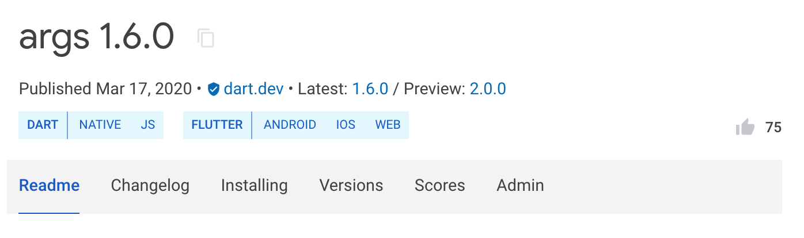

釋出 package
Pub package 管理工具 不但可以讓你使用其他人開發的 package，而且能向全世界分享你自己製作的 package。如果你有一個有用的專案，且希望別人能夠用到它，請使用 dart pub publish 命令。
觀看下面的影片以瞭解建構和釋出 package 的基本流程。
釋出是永久的
切記，釋出過的 package 將會永久存在。只要你釋出了你的 package，使用者就能依賴它。而依賴關係一旦建立，移除 package 將破壞他們的專案。為了避免這種事發生，除了極少數情況，pub.dev 政策 不允許撤回已經發布的 package。
你可以一直上傳自己 package 的新版本，但是舊版本對於那些尚未準備好升級的使用者仍然可用。
對於那些已經發布，但不再相關或不再維護的 package，你可以 把他們標記為終止。
準備釋出
釋出一個 package 時，遵守 pubspec 格式 和 package 佈局慣例 很重要。為了其他人能使用你的 package，有些要求是必須的，其他則是一些有助於使用者更好理解和使用的建議。對於以上兩者，pub 都會指出具體的改變方法，幫助你的 package 在 Dart 生態系統中展現的更好。對於上傳 package 有一些額外的要求：
-
你的 package 必須包含一個
LICENSE檔案。我們推薦 BSD 3-clause 許可證，也就是 Dart 和 Flutter 團隊所使用的開源許可證。同時，對於你所上傳的 package 任意部分，你必須擁有重新發布的合法權利。 -
透過 gzip 壓縮後，你的 package 必須小於 100 MB。如果它所佔空間過大，考慮將它分割為幾個小的 package、使用
.pubignore移除不需要的檔案，或者減少包含資源或例項的數量。 -
你的 package 應該僅依賴於已被託管的依賴項（來自預設的 pub 包服務）和屬於 SDK 的依賴項（
sdk: flutter）。這些限制條件確保了你的 package 的依賴項在未來依然可用。 -
你必須有一個 Google 賬戶，pub 將使用它來管理 package 上傳許可權。你的 Google 賬戶可以與 Gmail 或其他任何郵箱地址關聯。
重要的檔案
Pub 在 pub.dev/packages/<your_package> 裡，使用幾個檔案的內容來建立你的 package 頁面。以下就是會影響到頁面效果的幾個檔案：
-
README.md:
README.md檔案是你 package 頁面的主要組成部分。它的內容將會按 Markdown 格式渲染。想按照規範編寫一個超棒的 README 嗎，請參閱 編寫 package 介紹頁。
-
CHANGELOG.md: 如果你 package 的
CHANGELOG.md檔案存在，同樣會作為頁面的一個選項卡展示。開發者可透過 pub.dev 閱讀它。它的內容將會按 Markdown 格式渲染。 -
The pubspec: 你 package 的
pubspec.yaml檔案被用於填寫關於 package 本身的細節，例如它的描述，主頁等等。這些資訊將被展現在頁面的右側。
使用已驗證釋出者的優點
你可以使用已驗證釋出者（推薦）或一個獨立的 Google 賬戶來發布 package。使用已驗證釋出者有以下幾個優點：
-
你 package 的使用者知道釋出者域名已經過驗證。
-
你可以避免讓 pub.dev 展示你的個人郵箱，pub.dev 將展示釋出者域名和聯絡地址作為代替。
-
一個已驗證釋出者徽章
 將在你的 package 名字旁邊展示，不論是在搜尋頁面還是單獨的 package 頁面。
將在你的 package 名字旁邊展示，不論是在搜尋頁面還是單獨的 package 頁面。
建立一個已驗證釋出者
想要建立一個已驗證釋出者，跟隨以下步驟：
-
存取 pub.dev。
-
用一個 Google 賬戶登入 pub.dev。
-
在右上角的使用者選單中，選擇 建立釋出者。
-
輸入你想要與釋出者關聯的域名（例如，
dart.dev），然後點選 建立釋出者。 -
在確認彈框中，選擇 好。
-
如果收到提示，在開啟的 Google 搜尋控制檯 中完成確認流程。
-
新增 NDS 記錄，可能需要幾個小時讓搜尋控制檯確認改動。
-
確認流程完成後，返回第四步。
-
釋出你的 package
使用 dart pub publish 命令來首次釋出你的 package，或者把它升級到一個新版本。
示範一次試執行
為了測試 dart pub publish 命令會如何工作，你可以示範一次試執行（不會真的釋出，只顯示效果）：
$ dart pub publish --dry-run
Pub 會確認你的 package 符合 pubspec 格式
和 package 佈局慣例，然後把它上傳至 pub.dev。
Pub 也會提前向你展示所有準備釋出的檔案。如下是一個範例，展示了將要釋出的名為 transmogrify 的 package：
Publishing transmogrify 1.0.0
.gitignore
CHANGELOG.md
README.md
lib
transmogrify.dart
src
transmogrifier.dart
transmogrification.dart
pubspec.yaml
test
transmogrify_test.dart
Package has 0 warnings.
釋出
當你已經準備好釋出你的 package 後，移除 --dry-run 引數：
$ dart pub publish
在你的 package 成功上傳至 pub.dev 之後，任何使用者都能夠下載或在專案中依賴它。例如，如果你剛剛釋出了你的 transmogrify package 1.0.0 版本，那麼另一個 Dart 開發者將可以把它作為一項依賴新增到 pubspec.yaml 檔案中：
dependencies:
transmogrify: ^1.0.0
Automated publishing
Once the first version of a package has been published, it is possible to configure automated publishing through GitHub Actions or Google Cloud service accounts. To learn more about automated publishing, see Automated publishing of packages to pub.dev.
把 package 轉移至已驗證釋出者
想要把 package 轉移至已驗證釋出者，你必須是 package 的一個上傳者，以及已驗證釋出者的管理員。
以下是如何把 package 轉移至已驗證釋出者：
-
用一個作為 package 上傳者之一的 Google 賬戶登入 pub.dev。
-
存取 package 詳情頁面（例如，
https://pub.dev/packages/http）。 -
選擇 管理員 選項卡。
-
輸入已驗證釋出者的名稱，然後點選 轉移至已驗證釋出者。
哪些檔案會被髮布？
在你 package 中的 所有檔案 都會被包含在釋出的 package 中，除了以下幾個例外：
-
所有 隱藏 檔案和資料夾——即檔名以
.開頭的檔案 -
.pubignore和.gitignore檔案忽略的所有檔案
如果你需要 git 和 dart pub publish 有不同的規則，你可以建立 .pubignore 對 .gitignore 進行重載。（如果一個資料夾既有 .pubignore 又有 .gitignore 檔案，則 dart pub publish 不會採用 .gitignore 的規則）
.pubignore 檔案的格式與 .gitignore 檔案格式 相同。
如果你不想釋出一些檔案，請參考以下步驟：
-
刪除它們，或者把它們加入
.pubignore或.gitignore檔案。 -
執行
dart pub publish上傳前仔細檢查檔案列表。如果發現了不需要的檔案，則取消這次上傳。
平台支援
pub.dev 會檢測 package 支援哪些平台，並呈現到 package 的頁面上。使用者可以過濾查詢特定平台的 package。
若要改變自動檢測產生的支援平台列表，則需要在 pubspec 檔案中 指定平台。
上傳者
釋出 package 第一個版本的人，將自動成為唯一有權對其進行更新的人。
要允許或取消其他人更新版本，可以從下列兩種方法中任選一種：
-
管理頁面管理授權的 package 上傳者：
https://pub.dev/packages/<package>/admin。 -
將 package 轉給一個 已驗證的釋出者，這個釋出者的所有成員都有上傳的權利。
釋出者展示
如果 package 有了已驗證釋出者， pub.dev 頁面將展示已驗證釋出者域名。
如果 package 的釋出者沒有選擇認證，出於隱私原因，我們不會披露釋出者的資訊。 (Publisher 會顯示 “unverified uploader”，即：未經驗證的上傳者)。
以預發行的方式釋出
如果你正專注於開發一個 package，考慮將它以預發行的方式釋出。預發行將在以下 任意情況下 下變得實用：
-
你正在活躍的開發該 package 的下一個主版本。
-
你想要為該 package 下一個候選的釋出版做 beta 測試。
-
該 package 依賴於 Dart 或 Flutter SDK 的一個不穩定版本。
正如在 版本號語義 中描述的那樣，要製作一個版本的預釋出，你需要為其新增一個字尾。例如，要給 2.0.0 版本做一個預釋出，你可能會使用 2.0.0-dev.1 作為版本號。接下來，當你釋出 2.0.0 正式版後，它將優先於所有諸如 2.0.0-XXX 的預釋出。
當穩定釋出版可用時，pub 會主動選擇它們，所以使用預釋出的使用者可能需要改變它們的依賴約束。例如，如果一個使用者想要測試 2.1 版本的預釋出，那麼他可能需要指明是 ^2.1.0-dev.1 版本，而不是 ^2.0.0 或者 ^2.1.0 版本。
當一個預釋出被髮布在 pub.dev，package 主頁會同時展示預釋出和穩定釋出的連結。預釋出不會影響分析評分，不會出現在搜尋結果裡，也不會代替 package 的 README.md 檔案和說明文件。
釋出預覽版本
在以下條件都滿足時，預覽版是非常有用的版本：
-
下一個穩定版本是完整功能的版本。
-
在最新的穩定版 Dart SDK 中，沒有釋出目前版本使用的 API。
-
你的 package 所依賴的 API 或功能在釋出到穩定版 SDK 前不會再改變。
舉個例子，假設 package:args 的 2.0.0 版本是已經完成的版本，但它依賴了 Dart 3.0.0-417.1.beta 的功能，這時 3.0.0 的 SDK 尚未釋出。它的 pubspec 如下：
name: args
version: 2.0.0
environment:
sdk: '>=3.0.0-417.1.beta <4.0.0'
當這個 package 釋出到 pub.dev 上時，會被標記為預覽版，如下圖所示，
1.6.0 是正式版而 2.0.0 是預覽版。

當 3.0.0 的穩定版 SDK 釋出後，pub.dev 會更新 package 列表，此時 2.0.0 會顯示為穩定版本。
如果上面的所有條件都滿足，那麼你可以在執行 dart pub publish 時忽略以下的警告：
“Packages with an SDK constraint on a pre-release of the Dart SDK should themselves be published as a pre-release version. If this package needs Dart version 3.0.0-0, consider publishing the package as a pre-release instead.”
撤回 package 的某個版本
出於某些特殊情況，若你需要一個新版本被使用者使用，你可以在釋出後 7 天內撤回該軟體包版本。撤回的版本可以在撤回後的 7 天內再次恢復。
被撤回的版本不會被刪除，它會顯示在 pub.dev 上的 Retracted versions 區域。同時，對應版本的詳細資訊內會有一個 RETRACTED 標籤。
在撤回版本之前，你可以考慮直接釋出一個新版本。撤回版本可能會對使用者造成混亂和負面的使用體驗。
如果你不小心釋出了 未有效限制依賴版本 的新版本，那麼撤回可能是唯一的選擇。釋出新版本對於這樣的情況來說是無效的，因為 pub 依然能解析到新版。撤回未有效限制依賴版本的版本，可以讓使用者在嘗試依賴時報錯，或者升級到更新的版本。
然而，如果你的新版本僅僅是包含了一個小 bug，便無需撤回版本。釋出一個修復了 bug 的新版，並且在 CHANGELOG.md 中標註內容，可以幫助使用者瞭解到問題所在。釋出新版也會讓使用者的使用體驗更好。
如何使用已撤回的版本
如果一個 package 的對應版本已被撤回，在 pubspec.lock 標明它被依賴時仍然能被使用。如果你想依賴某個撤回的版本，你可以在 pubspec.yaml 檔案中的
dependency_overrides 部分固定對應版本的使用。
如何撤回或恢復 package 的某個版本
想要撤回或恢復 package 的某個版本，首先你需要使用 Google 帳號登入到 pub.dev，該帳號需要是該 package 的上傳者或 認證的釋出者 管理。接著進入到 package 頁面上的 Admin 標籤欄，進行撤回和恢復版本操作。
把 package 標記為終止
儘管 package 的釋出總是會被保留，在需要時，把它標記為不再活躍的維護將會對開發者有幫助。為了達到這一點，你可以將一個 package 標記為 終止。終止的 package 曾經的釋出依然留存在 pub.dev 上，並可以被看到，但是它有一個清楚的 終止 徽章，而且不會出現在搜尋結果中。
要把 package 標記為終止，首先你需要使用 Google 帳號登入到 pub.dev，該帳號需要是該 package 的上傳者或 認證的釋出者 管理。接著進入到 package 頁面上的 Admin 標籤欄，在其中將其標記為終止。如果你回心轉意想繼續維護，可在任意時候移除終止標記。